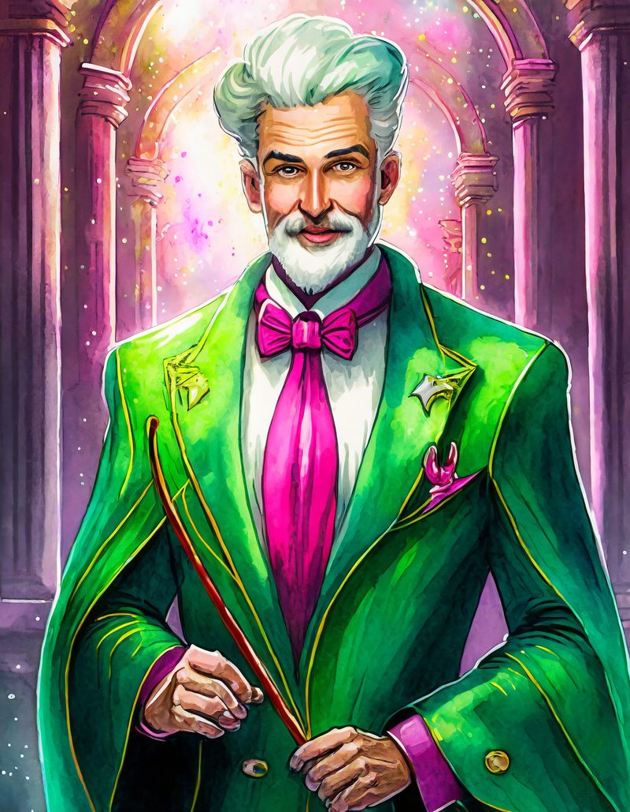

Marge is an award winning painter, cook and homemaker. Despite these tendencies, Marge has had her fair share of wild escapades throughout the history of the series. She worked as a police officer in Springfield, took therapy for flight fear, was a real estate agent, sold pretzels, was a painter, was imprisoned for shoplifting, became a gambling addict, showed alcoholic tendencies, was at one time known as The Listen Lady, was an unwilling participant in a cross-country police chase, overdosed on steroids, cheated on a cooking competition and developed amnesia.
Marjorie Jacqueline "Marge" Simpson, (née Bouvier), is the happy homemaker and full-time mom of the Simpson family. With her husband Homer, she has three children: Bart, Lisa, and Maggie Simpson. Marge is the moralistic force in her family and often provides a grounding voice in the midst of her family's antics by trying to maintain order in the Simpson household. Aside from her duties at home, Marge flirted briefly with a number of careers ranging from police officer to anti-violence activist.
May 2016 - April 2017
Diploma In Management Studies
Suspendisse faucibus et pellentesque egestas lacus ante convallis.
May 2017 - April 2018
Diploma In Management
Suspendisse faucibus et pellentesque egestas lacus ante convallis.
May 2018 - April 2019
Management Of Company
Suspendisse faucibus et pellentesque egestas lacus ante convallis.
According to Simpsons Fandom Marge has the following skills:
Marge is a prolific user of the Adobe product suite. From creating logos in Illustrator, producing brochures and posters within InDesign or editing movies with Adobe Premiere. Marge has the following skillset levels within the following Adobe Programs:
Want to hear what clients and collaborators think about the Marge Simpson experience? Select any one of the client testimonials for some awesome insights into the way I design, how I communicate and how I have already helped change the graphic design landscape.
